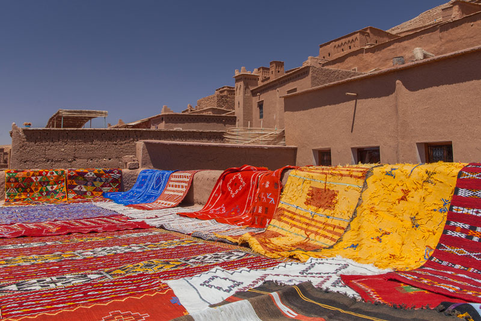
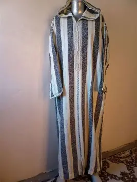
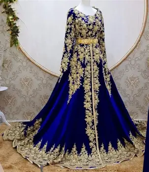

Présentation
Les textiles marocains sont le reflet d'une culture riche et diversifiée. Des tapis berbères aux caftans brodés, chaque pièce raconte une histoire transmise de génération en génération. Les femmes de l'Atlas perpétuent cet art du tissage avec passion et précision.
Nos Produits Textiles

Tapis Berbère
Tissé à la main par les femmes de l'Atlas, chaque tapis berbère est unique et authentique. Ses motifs géométriques symbolisent la culture et les croyances des tribus amazighes du Maroc.
Découvrir les tapis berbères →
Djellaba traditionnelle
Vêtement emblématique du Maroc, la djellaba est disponible en laine pour l'hiver ou en coton léger pour l'été. Elle incarne l'élégance et la tradition marocaine au quotidien.
Découvrir les djellabas →
Caftan de fête
Brodé à la main avec des fils dorés, le caftan marocain est parfait pour les mariages et occasions spéciales. Symbole de féminité et de raffinement, il est reconnu dans le monde entier.
Découvrir les caftans →Catégories liées
Explorez également nos autres catégories d'artisanat marocain :